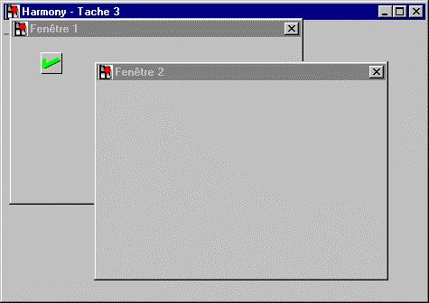
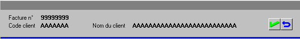
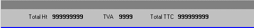
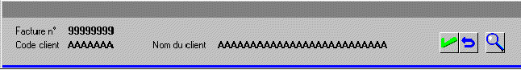
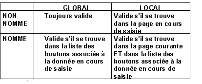

Il est possible d'une part de préciser la portée d'un bouton, d'autre part de spécifier si un bouton est valide ou invalide par exemple lors de la saisie de telle ou telle donnée. Nous nous intéressons ici aussi bien aux boutons classiques (placés dans une page Xwin) qu'aux boutons de barre d'outils et, par analogie, aux choix de menu.
Règle 1 : Un bouton n'est valide que dans la fenêtre courante. Par exemple :

Pendant la saisie des données de la fenêtre 1, le fait d'appuyer sur le bouton de validation provoque une action. Mais pendant la saisie de la fenêtre 2, même s'il est encore visible, il ne déclenche plus aucune action car il n'appartient pas à la fenêtre courante.
Bouton global et bouton local
Cette propriété des boutons classiques (qui ne concerne ni les boutons de barre d’outils ni les choix de menu) permet d'invalider localement un bouton en saisie ou en consultation d'une page de masque.
Règle 2 : Après application de la règle 1 :
Un bouton "local" n'est valide que s'il se trouve dans la page Xwin courante.
Un bouton "global" est valide même s'il se trouve dans une autre page Xwin.
Les boutons locaux invalides sont "grisés" pour signaler à l'utilisateur que l'action qui leur est associée n'est pas actuellement disponible.
Voyons l'exemple d'une facture présentant simultanément plusieurs pages Xwin à l'écran : une page d'en-tête avec deux boutons de validation et d'abandon et une page de pied :


Si les boutons sont déclarés "globaux", ils seront valides aussi bien lors de la saisie (ou la consultation) de l'en-tête que de celle du pied. Mais s'ils sont déclarés "locaux", ils ne seront pas valides durant la saisie (ou la consultation) du pied (puisqu'ils n'appartiennent pas à cette page Xwin).
Bouton nommé
La propriété "Nom pour la sélection" permet d'invalider contextuellement un bouton, en saisie de page de masque ou de ligne de tableau et en consultation de page ou de tableau.
Règle 3 : Après application des règles 1 et 2, un bouton nommé n'est valide que si son nom figure dans la liste des boutons valides :
De la page, en cas de la consultation d'une page Xwin par XmeConsult.
Du tableau, en cas de la consultation d'un tableau par XmeListConsult.
De la donnée en cours de saisie, en cas de saisie par XmeInput ou XmeListInput.
La validité d'un bouton non nommé est uniquement déterminée par les règles 1 et 2.
L'intérêt des boutons nommés est d'obtenir, sans aucune programmation, le grisage des boutons qui n'ont pas d'effet à un instant donné. Ainsi, l'utilisateur connaît à tout moment les fonctionnalités disponibles. Cette règle concerne les boutons classiques, les boutons de barre d’outils et les choix de menu.
Reprenons l'exemple précédent en y ajoutant un bouton d'appel de zoom, servant uniquement à appeler le zoom client en cours de saisie du code client :

On ne nommera pas les boutons globaux de validation et d'abandon. Ceux-ci resteront toujours valides.
On garnira la propriété "Nom pour la sélection" du bouton d'appel de zoom (par exemple avec le nom ZOOM_CLIENT). Par défaut, ce bouton restera invalide en consultation ou en saisie d'une donnée quelconque du masque. Pour le valider en saisie du code article, on ajoutera le bouton dans la liste des boutons valides du champ "Code client".
Ce tableau résume les conditions de validité d'un bouton en saisie de donnée :

Invalider un bouton par programme
Les fonctionnalités précédentes s'obtiennent sans qu'il soit nécessaire de programmer quoi que ce soit. Pour être complet, signalons qu'il est aussi possible d'invalider un bouton par programme :
Boutons classiques.
Pour invalider un bouton classique par programme, il faut faire appel aux attributs dynamiques (attribut AN_VISIBILITE).
Boutons de barre d'outils.
Pour invalider un bouton de barre d'outils par programme, il faut faire appel à la fonction spécifique XmeToolbarEnableButton.
Choix de menu.
Pour invalider un choix de menu par programme, il faut faire appel à la fonction spécifique XmeMenuEnableItem.